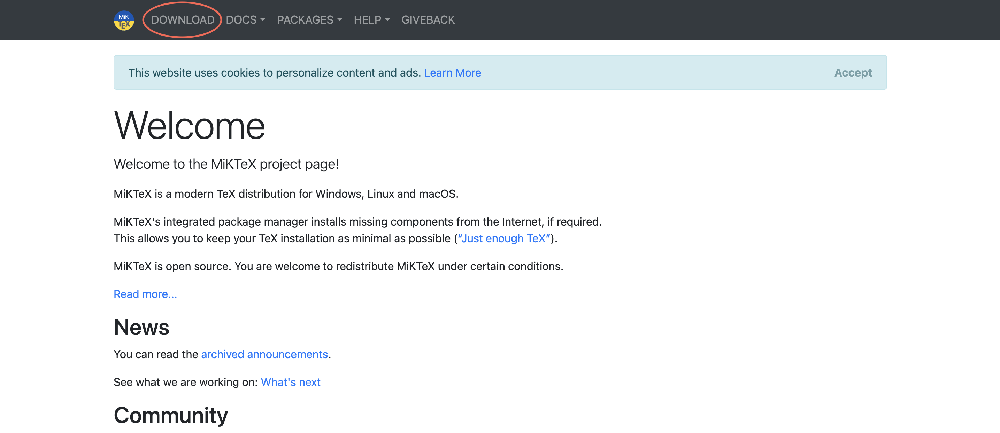
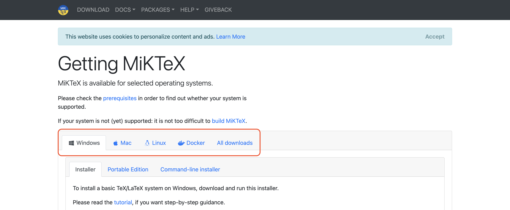
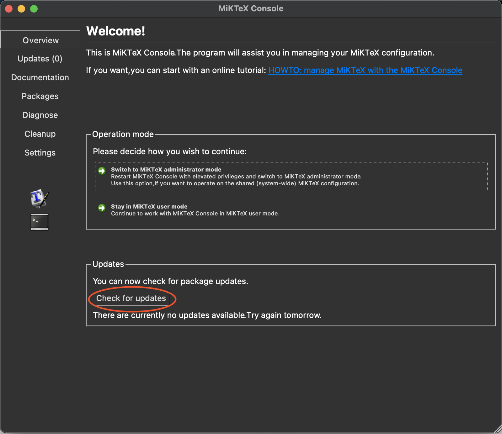
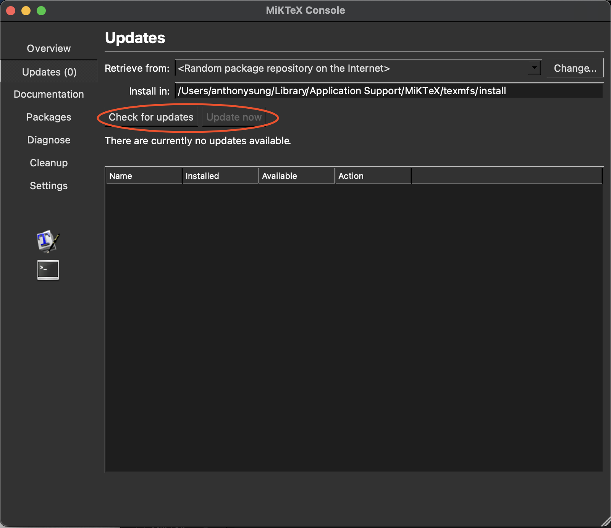
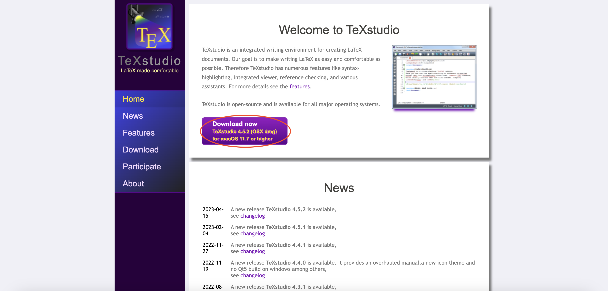

第一個 LaTeX 程式（包含安裝教學）
\(\LaTeX\) 是一個基於 \(\TeX\) 的排版系統，由美國電腦科學家 Leslie Lamport開發，遵循呈現與內容分離的設計理念，讓使用者能夠在撰文時致力於寫作，而非同時兼顧版面與內文1。Word 與 \(\LaTeX\) 最大的不同之處在於，Word 最強大的功能「所得即所見」是勝過後者的優勢，初學者可以無師自通，後者則是需要學習指令，Word 的這個特點就完全贏過後者。然而，\(\LaTeX\) 的特點即是「呈現與內容分離」，使用者可以專注於撰文，而不用同時注意內文與版面。因此，許多 \(\LaTeX\) 的使用者仍會透過Word先進行「前端設計」，再交由 \(\LaTeX\) 進行版面設定與產出。這個系列的內容係參考自李果正的《大家來學\(\LaTeX\)》與吳聰敏老師的《cw\(\TeX\) 排版系統》。
編輯及編譯系統安裝
\(\LaTeX\) 有許多不同種類的編譯與編輯器組合，本文將以作者最常見的組合 MiKTeX 搭配 TeXStudio 介紹。當然如果有特別的偏好也無妨，只要能夠編輯即可。
MikTeX 安裝
首先點擊這裡進入 MiKTeX 官網。

接著點擊 Download 按鈕， 進入頁面後根據電腦的作業系統選擇安裝檔。

下載並安裝後便可以進行更新。
 按下之後即可更新 MiKTeX。更新完畢後點選左側的 Updates 按鈕進入更新區，依序按下 Check for updates 以及 Update now 後即完成。

安裝 TeXStudio
請點擊這裡進入 TeXStudio 官網後，按下下載按鈕即可安裝。安裝完成後基本上就可以開始編譯了。
 如果要更改編譯器，請到依照以下步驟更改。
- macOS 系統：點選左上角
TeXStudio\(\rightarrow\) 點選Preferences\(\rightarrow\) 點選Build\(\rightarrow\) 將 Default Compiler 改為你想要的編譯器。 - macOS 系統：點選左上角
TeXStudio\(\rightarrow\) 點選Options\(\rightarrow\) 點選Build\(\rightarrow\) 將 Default Compiler 改為你想要的編譯器。
以上就是安裝 MiKTeX 與 TeXStudio 的過程。
語法概說
進到 \(\LaTeX\) 之後，我們就可以在編輯頁面中輸入以下的指令(command)。
\documentclass[12pt]{article}
\title{My First Document}
\author{Author}
\date{}
\begin{document}
\maketitle
\end{document}我們就可以看到以下的畫面。

在看這篇文章的你一定會好奇這幾行程式碼是什麼意思。那你肯定來對地方了！接下來我就要來一一解析這幾行程式碼背後的意義。
設定文稿結構與基礎格式
\documentclass[12pt]{article}首先，\documentclass 代表我們要去設定這份文檔的基礎格式。而在 \(\LaTeX\) 裡，如果我們要輸入 \(\LaTeX\) 的指令，就必須要在前方加上 \（反斜線）。\(\LaTeX\) 常見的排版專用符號大致可以用下面的表格呈現：
| 符號 | 功能 |
|---|---|
\ |
下排版命令 |
% |
註解 |
# |
定義巨集 |
~ |
產生空白 |
$ |
進入/離開數學模式 |
^ |
數學模式中的上標字 |
_ |
數學模式中的下標字 |
& |
分隔符號 |
選擇參數與必要參數
後面的 [12pt] 則是設定字體的大小，方括號（我們稱為選擇變數）裡面不只可以設定字級，也可以設定紙張大小，比如 [12pt, a4paper]。最後的 {article} 稱為必要參數，也就是說，前面的選擇參數可以不打任何東西，但花括號裡頭一定要放上內容。我們必須注意幾件事情：
- 不同於Word，\(\LaTeX\) 文稿中，空一個與多個英文空白的意思是一樣 的，\(\LaTeX\) 會認作一個空白。
- 按下Enter 鍵不代表換行，換行必須要使用雙斜線（
\\，Windows 用戶可以同時按下Ctrl與Enter鍵），或是以\newline、\linebreak進行換行。
使用指令
\(\LaTeX\) 的指令是從反斜線後第一個字母開始，到第一個非字母符號為止 （包含空白、標點符號及數字）。因此：
This is my first \LaTeX typesetting example.這樣的話，由於空白屬於指令的一部分，故會印出：
This is my first \(\LaTeX\)typesetting example.
因此若要避免上述情況，就必須使用以下三種方法：
This is my first {\LaTeX} typesetting example.This is my first \LaTeX{} typesetting example.This is my first \LaTeX\ typesetting example.
正確的輸出應該為：
This is my first \(\LaTeX\) typesetting example.
使用註解
註解符號(%) 可以放在一行的任何地方，% 的文字會被 \(\LaTeX\) 忽略。因此如果放在一行的最尾端，那麼 \(\LaTeX\) 會自動插入的字間空白也將會被忽略。
開啟環境
\(\LaTeX\) 有一種巨集結構，稱為環境(environment)，主要是讓作用範圍能 擴大至較大的範圍。所有的環境都起於\begin{環境名稱}，止於 \end{環境名稱}。這兩個指令之間的文稿都會被作用，而且，環境之內還可以套用其他不同的環境。\(\LaTeX\) 文稿的內文，就是包在一個
\begin{環境名稱}
...
\end{環境名稱}這個 document 環境當中。以下就是所有 \(\LaTeX\) 必須具備的文稿大結構：
\documentclass[]{}
%這裡是preamble 區
\begin{document}
...
\end{document}前言區(preamble)
這裡可以引用巨集(macro)，而且會影響整篇文稿的指令，例如一些事先 定義好的指令，想在整篇文稿中使用，就可以置放在 preamble 區。例如：
\documentclass[12pt]{article}
\usepackage
\begin{document}
The text will be \textcolor{blue}{blue}.
\end{document}
章節標題設定
在 \(\LaTeX\) 的文稿裡頭，章節標題的形成都是由同樣的指令來控制的，這樣有一個好處，臨時插入章節標題及其內文時，我們不必去理會標題編號及目錄的問題，也不必去理會要用什麼字型、及字型大小要多大，\(\LaTeX\) 會自動計算處理，字型大小也會和內文使用的字型大小互相配合調整，使用者就專心在內文構思、寫作即可。以下由列表來瞭解整個章節結構：
| 深度編號 | 指令 | 作用及注意事項 |
|---|---|---|
| -1 | part{} |
部 |
| 0 | chapter{} |
章，在 article 沒有章 |
| 1 | section{} |
節 |
| 2 | subsection{} |
小節 |
| 3 | subsubsection{} |
次小節 |
| 4 | paragraph{} |
段落 |
| 5 | subparagraph{} |
次段落 |
上面程式碼可以在這裡下載。
第一份 \(\LaTeX\) 文件
簡單實例操作
先來試試看，這裡先使用 report 類別文稿，因為 article 類別文稿是沒有chapter 的
\documentclass{report}
\begin{document}
This is my first {\LaTeX} typesetting example.\\
This is my first \LaTeX{} typesetting example.\\
This is my first \LaTeX\ typesetting example.\\
I am Mr. Edward G.J. Lee, G.J. is a abbreviation of my name.\\
I am Mr.\ Edward G.J. Lee, G.J. is a abbreviation of my name.\\
Please see Appendix A. We will be there soon.\\
Please see Appendix A\null. We will be there soon.
\end{document}排版結果如下：

關於縮排
我們可以看到第一行縮排了，因為沒有分章節便將換行前的內容做為引言，故會縮排。要解決問題有兩種方法：
- 第一行加入
\noindent來指示 \(\LaTeX\) 不要縮排。但這種作法仍僅限於下指令之處，其他該縮排的地方仍會縮排。 - 在 preamble 區加入
\parindent=0pt，表示讓全文的縮排為0pt，當然這就表示全文都不要縮排了。
加入章節標題
在 \(\LaTeX\) 中加入章節標題可以不用理會字體大小，只需下指令即可。以下仍用 report 類別說明。注意到，\(\LaTeX\) 對於章節標題的預設數字都是阿拉伯數字，若要自行改成中文標題，可以在大括號前加上星號(*)，就可以自行替換了，例如\section{}、\section*{}。
加入標題頁資訊
這是指內頁的第一頁，我也不知道這個中文專有名詞是什麼，在 \(\LaTeX\) 裡頭，我們就稱為 title page。在 \(\LaTeX\) 的標準格式裡，他包括了標題(title)、作者名字(author)、日期(date) 及感謝詞(thanks)。
\documentclass{report}
\title{Report File}
\author{Noname\thanks{Thanks to the readers.}}
\date{\today}
\begin{document}
\maketitle
This is the first sentence in my \LaTeX\ file.
\chapter{First Chapter}
\section{Section}
...
\end{document}加入標題頁資訊後，必須在\begin{document}與\end{document}之間加入\maketitle，才能將剛剛的資訊在文件中顯示。
加入目錄
加入目錄(Table of Contents) 對 \(\LaTeX\) 而言，更是輕而易舉的事情，只要在本文開頭加個\tableofcontents指令就成了。
加入摘要
如果要加入的話，可使用 abstract 環境，即
\begin{abstract}
\end{abstract}在這個環境中的文章，左右會縮排。要注意的是，只有 article/report 類別才有 abstract，book 類別不能使用這個環境。report 類別的摘要自成一頁，不編頁碼，且不會編入目錄中，這和一般的論文格式可能會不一樣，使用時請注意。article 的類別則仍然是和本文相連的，會出現在文章標題之後。
加入註解
在 \(\LaTeX\) 裡頭，註解可有兩種方式，一種是腳註(footnote)，一種是邊註(marginal note)。通常 \(\LaTeX\) 的腳註預設是由阿拉伯數字在編號，置於頁底部。在沒有部(part)的情形下，report/book 類別，編號每章會從頭起算，article 類別則會連續，而且會使用footnotesize的字體印出。邊註則不編號，字體是正常大小。
- 腳註：只要在要加入腳註的後面加上
\footnote{}即可。 - 邊註：如果要使用邊註，首先必須在前言區引用
marginnote這個套件，接著便可以在文件中加入邊註。
\documentclass[a4paper,twoside,english]{article}
\title{Test}
\author{Noname}
\usepackage{lipsum}
\usepackage{marginnote}
\makeatother
\begin{document}
\maketitle
\section{Margin notes}
\marginnote{First margin note.}[0cm]
\marginnote{Second margin note.}[3cm]
\lipsum[1-2]\footnote{Footnote is right here.}
\end{document}字體大小與字形的調整
假設我們在文稿內想要將某些文字放大，有以下兩種方式：使用 \(\LaTeX\) 中預設調整字體大小的方式；另一種則是使用\selectfont{}將文字有彈性地調整至使用者想要的大小。不過，在討論字體大小調整之前，我們先來看一些簡單的設定，也就是如何將文字變成粗體、斜體、粗斜體
字形的調整
| 指令 | 結果 |
|---|---|
\textit{italic} |
\(\textit{italic}\) |
\textbf{boldface} |
boldface |
\textsf{sans serif} |
\(\textsf{sans serif}\) |
\textrm{roman} |
\(\textrm{roman}\) |
\texttt{typewriter} |
\(\texttt{typewriter}\) |
字體大小
系統預設調整字體大小的方式可以參考下列表格，右邊是對應的字級：
| 指令 | 實際大小 |
|---|---|
\tiny |
5pt |
\scriptsize |
7pt |
\footnotesize |
8pt |
\small |
9pt |
\normalsize |
10pt |
\large |
12pt |
\Large |
14.4pt |
\LARGE |
17.28pt |
\huge |
20.74pt |
\Huge |
24.88pt |
另一個方式則是使用{\fontsize{字級}{行基線間距}\selectfont Hello}
\documentclass[12pt]{article}
\usepackage{anyfontsize}
\makeatother
\begin{document}
{\fontsize{150}{60}\selectfont Hello}{\fontsize{15}{6}\selectfont Hello}
\end{document}使用中文
\(\TeX\) 的開發者 Knuth 教授當初並未料想到會有中文使用者欲進行排版，因此若我們想要在文件中顯示中文，則必須向 \(\LaTeX\) 宣告中文套件，才能在文稿內使用中文。注意到 \(\TeX\) 的編輯系統pdfLaTeX、XeLaTeX與LuaLaTeX在支援中文字體上有不一樣的程度：pdfLaTeX 是完全不支援；後兩者則是支援UTF-8。以下就分別以支援與不支援UTF-8的情況做說明。
不支援 UTF-8
在不支援 UTF-8 的情況下，我們要引用CJKutf8套件，並參考以下程式碼：
\documentclass[12pt]{article}
\usepackage{CJKutf8}
\begin{document}
\begin{CJK*}{UTF8}{中文字體}
\section{大綱}
這裡是大綱，也可輸入英文\\
You can also type english here.
\section{先備知識}
這裡是先備知識
\end{CJK*}
\end{document}支援 UTF-8
如果在 xeLaTeX 或 LuaLaTeX 的環境下，我們則使用xeCJK這個套件，並參考以下程式碼：
\documentclass[12pt]{article}
\usepackage{xeCJK}
\setCJKmainfont{標楷體}
\begin{document}
\section{第一章}
認識\LaTeX\
\section{第二章}
了解如何使用中文排版
\end{document}前面展示了如何使用引用中文的巨集套件。不過，在撰文時可能會需要使用不同字體，比如標題規定要使用標楷體，內文要使用新細明體，\(\LaTeX\) 可以針對電腦已安裝的字體搜尋其路徑，最後進行編譯。
\documentclass[12pt]{article}
\usepackage{xeCJK}
\setCJKmainfont{標楷體}
\setCJKfamilyfont{QHei}{cwTeXQHei-Bold} %宣告抓取該字體
\newcommand*{\QH}{\CJKfamily{QHei}} %設定該字體命令
\begin{document}
...
\end{document}最後，必須注意，這些字體都必須是已經安裝在讀者端的電腦上，如果想要下載由吳聰敏老師開發的cwTeX系列字體，可以參考這篇文章。
Footnotes
“Latex.” Wikipedia, Wikimedia Foundation, 12 June 2021, zh.wikipedia.org/zh-tw/LaTeX.↩︎